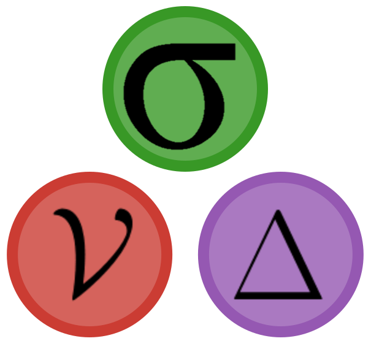
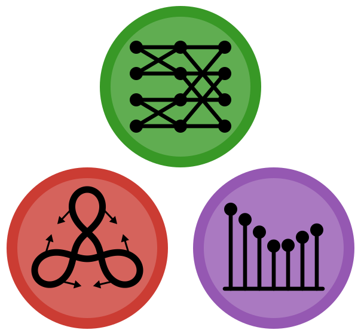
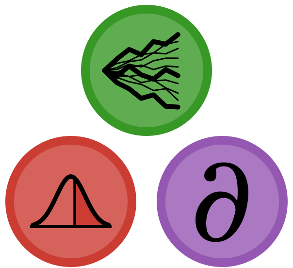
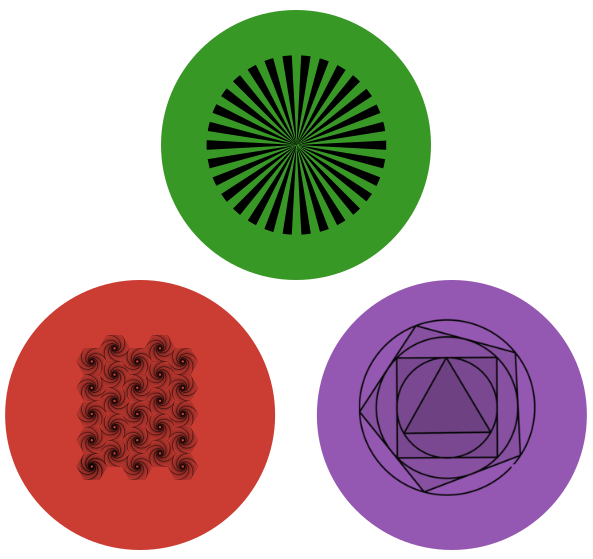

A small ecosystem of Julia packages for quantitative finance. They are generic in
the number type, so they work with automatic differentiation out of the box, and several of them run
on GPUs.

Black & Scholes in closed form
Pricing, Greeks and implied volatility under the Black and Black & Scholes models, with the
same syntax as the Matlab Financial Toolbox.
- Prices and sensitivities:
blsprice, blsdelta, blsvega, blsvanna, …
- Implied volatility with the 2024 version of Jäckel's Let's Be Rational: machine precision in at most two Householder steps.
- Date utilities:
yearfrac, daysact, Excel date conversion.
- Works with
Float32, BigFloat and AD number types.

Monte Carlo pricing for equity derivatives
Pricing and risk management of equity products by Monte Carlo simulation, from vanillas to
early-exercise options.
- Models: Black & Scholes, Heston, Kou, Merton, NIG, Variance Gamma, (shifted) lognormal mixtures; multivariate via Gaussian copula.
- Payoffs: European, barrier, Asian, Bermudan and American (Longstaff–Schwartz).
- Term structures of rates and dividends; pricing straight from an SDE via DifferentialEquations.jl.
- Threads, processes and CUDA; sensitivities through ForwardDiff, ReverseDiff, DualNumbers, TaylorSeries.

Fourier methods for option pricing
Extends FinancialMonteCarlo.jl with Fourier-based pricers that work directly on the
characteristic function of the model.
- Methods: Lewis, COS, Carr–Madan, Carr–Madan–Lewis.
- Densities of the log-return via FFT inversion or COS expansion, ready for likelihood-ratio and Vibrato estimators.
- European and binary options, single prices or whole smiles.
- Differentiable with ForwardDiff, ReverseDiff, Zygote, Mooncake and more; runs on CUDA.

Smooth Monte Carlo Greeks of any order
Plain Monte Carlo estimators are not differentiable, which makes automatic differentiation
useless on discontinuous payoffs. This package builds estimators that are
C∞, so sensitivities of any order come out of AD.
- Estimators: likelihood ratio, Vibrato (for any process, not just Itô), Vibrato saltando for finite-activity Lévy.
- Integration: numerical, Monte Carlo (standard, antithetic, Sobol), Gauss–Hermite.
- European, binary and (WIP) American options on Black & Scholes, Kou, Merton, NIG, VG.

Structured vectors, stored as patterns
An immutable AbstractVector that stores a few values and the rule for where they
go, instead of every element: think Simpson weights [1, 4, 2, 4, …, 4, 1],
alternating signs or boundary values on a grid.
- A tiny
isbits object: O(1) memory, ready to be sent to a GPU kernel as is.
- Broadcasts evaluate once per distinct value; mixed with dense arrays they fuse into a single pass, on CPU and GPU.
- O(1)
sum and range indexing.
- Differentiable with Zygote, Mooncake and Enzyme, with gradients kept on the pattern values.